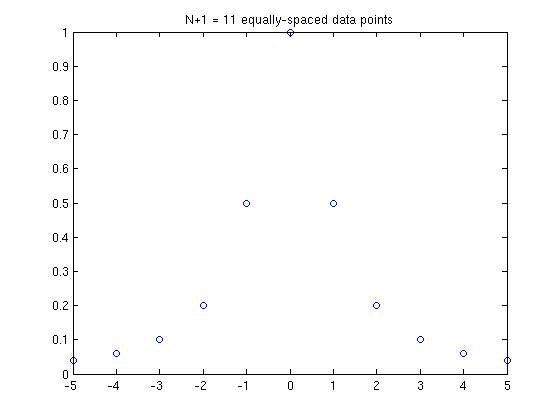
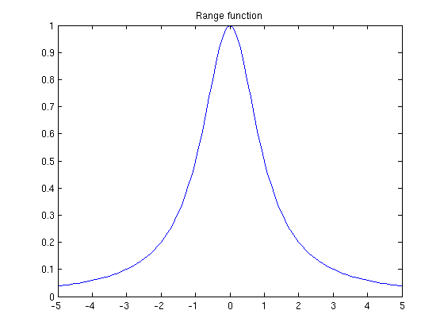
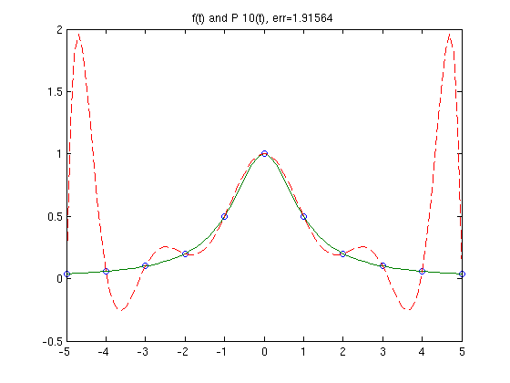
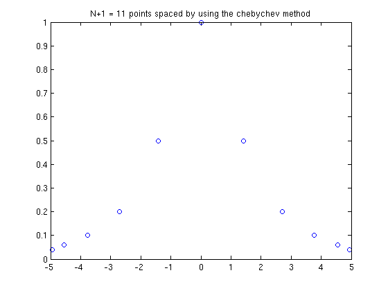
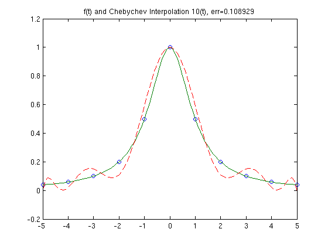

Lab 4
Contents
Problem 1
N = 10; x = linspace(-5,5,N+1); f = inline('1./(1+x.*x)','x'); y = f(x); plot(x, y, 'o'); title('N+1 = 11 equally-spaced data points'); t = [-5:.1:5]; figure; plot(t, f(t), '-'); title('Range function'); 
Problem 2
PN = polyfit(x,y,N); v = polyval(PN,t); err = norm(f(t)-v,inf); figure; plot(x,y,'o',t,f(t),'-',t,v,'--') title(sprintf('f(t) and P {10}(t), err=%g',err))
Problem 3
K = N+1; a = -5; b = 5; xcheb = zeros(1,K); for i=1:K xcheb(i)=(a+b)/2 + (b-a)/2 * cos( (i-.5)*pi/K ); end plot(xcheb, y, 'o'); title('N+1 = 11 points spaced by using the chebychev method'); ycheb = f(xcheb); PNcheb = polyfit(xcheb,ycheb,N); vcheb = polyval(PNcheb,t); cheberr = norm(f(t)-vcheb,inf); figure; plot(x,y,'o',t,f(t),'-',t,vcheb,'--') title(sprintf('f(t) and Chebychev Interpolation {10}(t), err=%g',cheberr)) 
The polynomial interpolation provided by matlabs polyfit finds the coefficeints of a p(x) that fit a vector of X points. The interpolation that happens in Problem 2 uses N equally spaced points (shown in Figure 1) and yeilds a polynomial that interpolates the points but also has a lot of error at the ends of the interval (in this case near -5 and 5). The Chebychev polynomial in problem 3 uses X values generated using the equation '(a+b)/2 + (b-a)/2 * cos( (i-.5)*pi/K )'. You can see in Figure 3 that the x values used in the Chebychev polynomial are bunched up near the ends of the interval (-5 to 5). The high error at the ends of the polynomail in Problem 2 is an example of Runge's phenomenom. The chebyshev points help mitigate the error poblem by using a least squares method to ensure a minimun maximum error.
Problem 4
As the number of nodes increases, the error in an interpolating polynomial with equally spaced X values becomes exteremely bad at the end of it's interval. In contrast, the polynomial using chebyshev points get's more and more accurate.